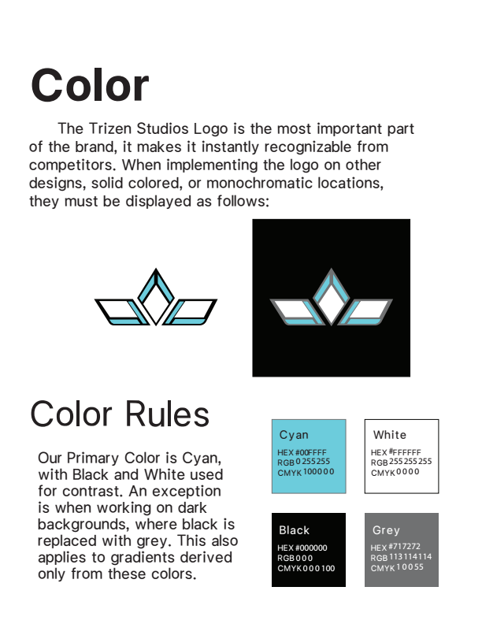
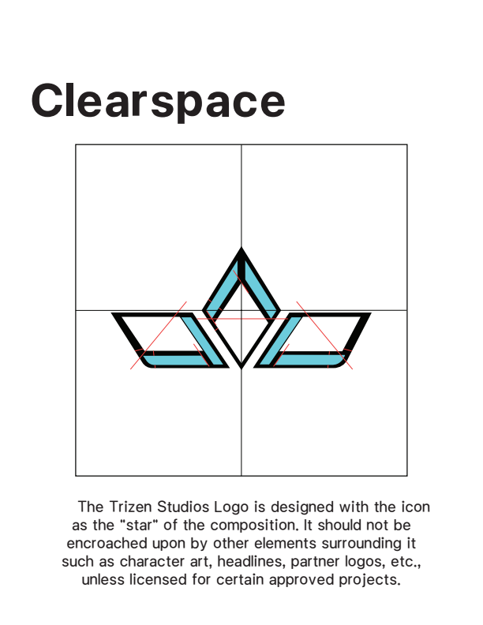
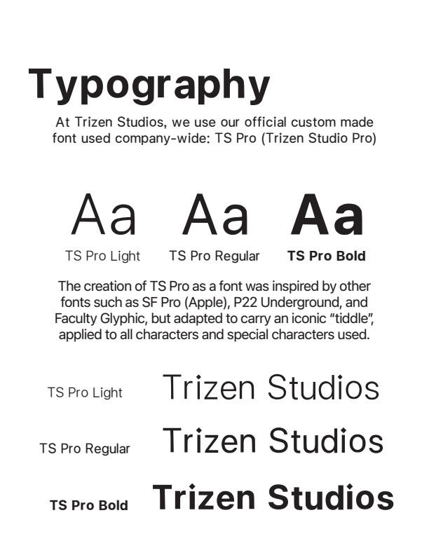
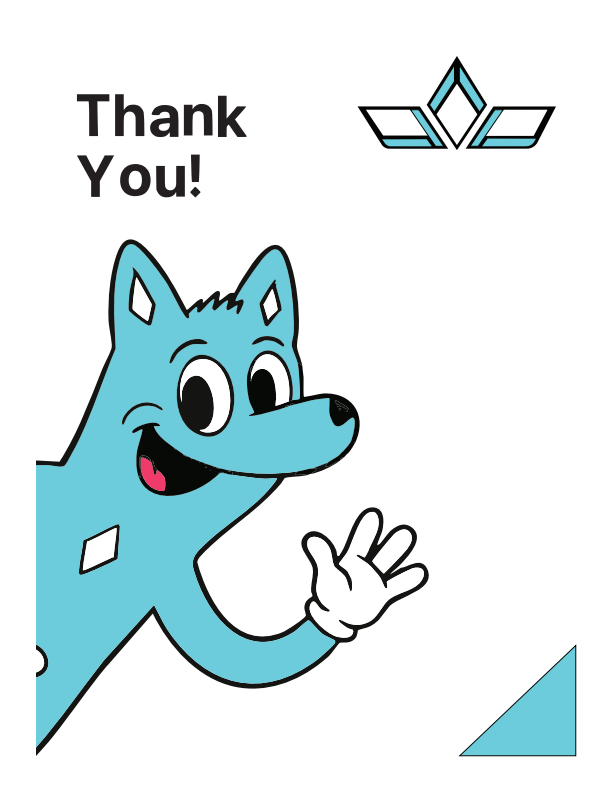

Brand Identity
Design System
Trizen Studios — Identity Standards & Guidelines
Complete corporate brand identity system specifying geometric logo construction, strict clearspace boundaries, color token definitions across digital and print spectra, custom typography, and official corporate stationery.





